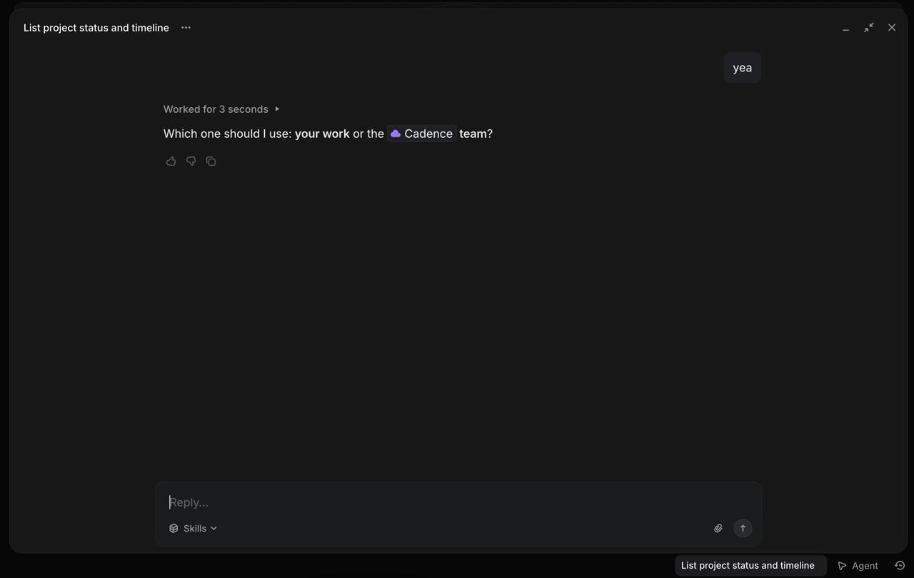
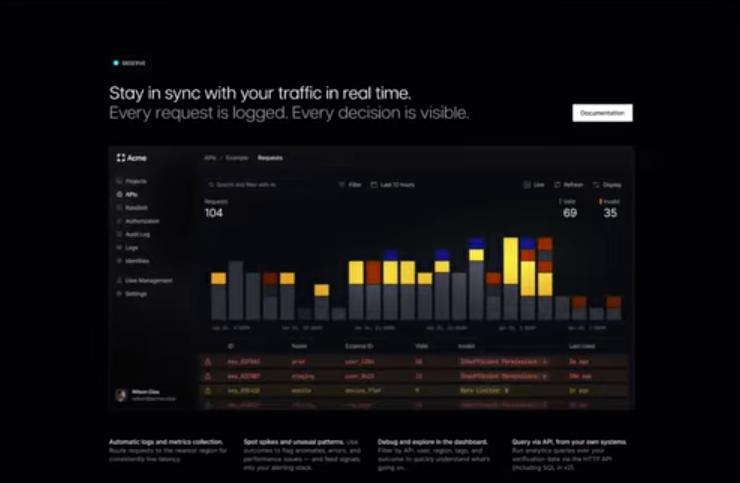
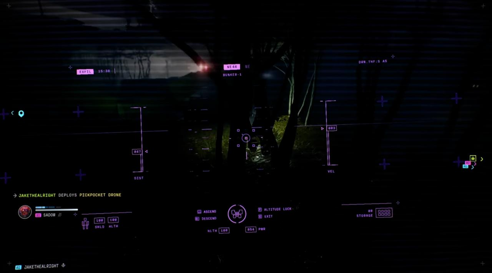

Repository
—Markdown files
—Sections
Current document
Pick a document to inspect.
Reference posture
Inspired by the supplied agent clarification UI, observability dashboard, and drone HUD: calm dark density, visible decisions, strong scanning, but not a game skin.
Inspiration


